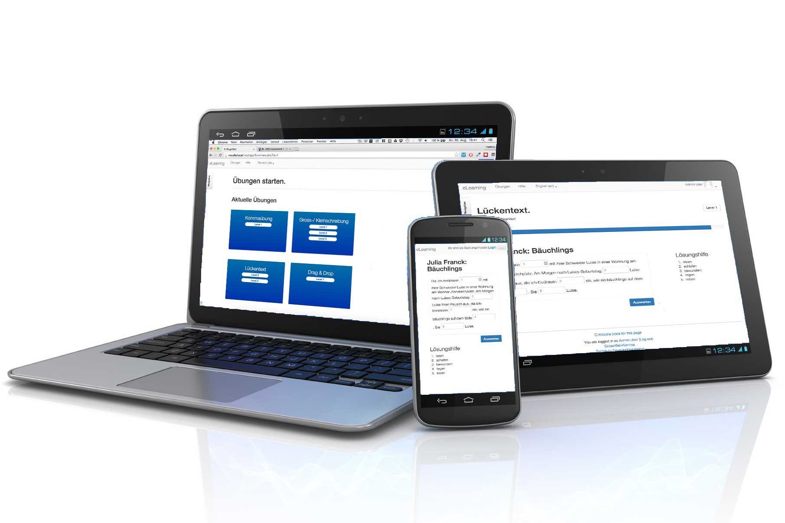

Portfolio von
Bettina Burri
Meine Fähigkeiten
Programmierung
Von HTML bis Java über JavaScript und PHP reichen meine Erfahrungen. HTML/CSS setze ich schon seit Jahren auch Beruflich ein. PHP, Java und JavaScript sind durch das Studium dazugekommen.
Design
Als ehemalige Bildhauerin ist mir Design wichtig. Ich gestalte gerne und gut. Schon etliche Jahre. Seit einigen Jahren ist nun auch das UI Design dazugekommen.
Video / Fotografie
Fotografie ist ein kleines Hobby von mir und seit ein einigen Jahren erstelle ich auch beruflich Semi-Professionelle Videos für den Internen Gebrauch.
Meine Arbeit
LightPolution
Mobile iPhone App, User Interface
MyTasks
Mobile Web App, Funktionierender Portotyp, HTML5, CSS, JavaScript, Bootstrap, PHP, SQL, Ajax
TheFridge
Mobile App, DesignThinkingProcess Konzeption, Uability Testing, KlickDummy, Axure
eLearning Deutsch
Mobile Web App, Funktionierende Applikation, Projektarbeit
Bite or Swpipe
Mobile iPhone App, UI, Projektarbeit
UI Pattern
Design, UI, Adobe Illustrator

Über mich
Bettina Burri
Kreative zukünftige Informatikerin mit Abschluss voraussichtlich Ende 2017 mit angewandten Kenntnissen im Requirements und Usability Engineering auf der Suche nach einer interessanten Aufgabe im Usability Engineering und User Experience Design Umfeld während meines Studiums, mit der Möglichkeit eine Karriere in einem innovativen und internationalen Entwicklerteam aufzubauen.